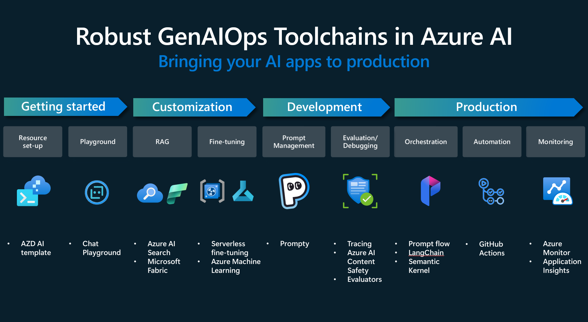

1.3 Azure AI Foundry Portal¶
In the previous section, we spoke broadly about the Generative AI Operations toolchains in Azure AI. In this section, we'll dive into more details about the Azure AI Foundry platform that streamlines this experience for AI Engineers and application developers.

Want to get a deeper dive into the details of the platform? Start with these two resources:
- Azure AI Foundry Documentation - canonical source.
- Azure AI Foundry Documentation Markmap - interactive visualization
1. Azure AI Foundry Architecture¶
Azure AI Foundry is the recommended platform for E2E development of customizable gen AI apps on Azure

-
The Azure AI Foundry platform provides a unified experience for building, evaluating, and deploying, AI models and applications on Azure.
-
Developers can build applications end-to-end using the web portal (low-code), the SDK (code-first) or the CLI (code-agnostic) based on preferences.
-
The three main components to know are:
- Azure OpenAI Service - specialized for use with OpenAI models.
- Azure AI Foundry Project - richer model catalog, dev tools, security & access controls.
- Management Center - for configuring AI hub, project, and connected, resources.
1.1 Azure OpenAI Resource¶
Azure OpenAI Resource is the key to working with OpenAI models.
- Use it directly from Azure OpenAI Service or via an Azure AI Foundry project
- Connect directly (kind=
OpenAI) or via AI Services (kind=AIServices) from project.
1.2 Azure AI Foundry Project¶
Azure AI Foundry Project is key to using full range of AI Foundry capabilities
- Explore 1800+ models (open-source, frontier, industry) through model catalog
- Connect to turnkey AI services (language, speech, document intellisense etc.)
- Connect to content safety services (filtering, jailbreak detection etc.)
- Connect to data & information retrieval services (AI Search, custom connections)
- Connect to storage & security services (key vault, log analytics etc.)
1.3 Management Center¶
FIGURE: View Management Center for an example Azure AI project (click to expand)

The Management Center provides a centralized location to manage governance and management tasks for your AI projects. To view the Management Center, visit the Azure AI project page and look for the Management Center option on the sidebar (bottom, left).
You can accomplish these tasks from this page:
- Manage hubs and projects - create & configure resource at both levels.
- Manage resource utilization - view and manage quota usage (with metrics)
- Manage access and governance - add/remove users and assign/remove access roles.
2. Resource Types & Providers¶
An Azure resource provider is a set of REST operations that enable functionality for a specific Azure service. Registering resource providers helps you define the Azure resources you can deploy to your account (subscription).
REVIEW: Learn about Azure & AI resource providers (click to expand)
A resource type's name follows the format: {resource-provider}/{resource-type}.
- Example: The resource type for a key vault is
Microsoft.KeyVault/vaults. - Learn More: Azure resource providers and types
- Learn More: Azure AI Foundry resource providers and types
1.2.3.1 AI Resource Providers¶
The Azure AI Foundry is built on the Azure Machine Learning resource provider, and takes a dependency on several other Azure services.
REVIEW: list of required resource providers for Azure AI. (expand to view)
Microsoft.MachineLearningServices/workspace (kind=hub)- for hubMicrosoft.MachineLearningServices/workspace (kind=project)- for projectMicrosoft.CognitiveServices/account (kind=AIServices)- for AI servicesMicrosoft.CognitiveServices/account (kind=AIServices OR OpenAI)- for AOAI ServiceMicrosoft.Storage/storageAccounts- for storing artifactsMicrosoft.KeyVault/vaults- for storing secrets
REVIEW: list of additional resource providers useful for RAG. (click to expand)
Microsoft.Search/searchServices- for search & retrievalMicrosoft.ContainerRegistry/registries- for registering docker imagesMicrosoft.Insights/components- for app insights & log analyticsMicrosoft.OperationalInsights/workspaces- for app insights & log analytics
1.2.3.2 Registering Providers¶
Some resource providers are registered by default. Others get registered on specific actions (e.g., deploy azd template with providers defined). Others need to be registered manually. You can view and update provider registrations using the Azure Portal or the Azure CLI.
Review these links to accomplish these tasks using the Azure Portal (in browser).
- View resource provider details - learn what each provider above does
- Register resource provider - check registration status & register it (if needed)
- Troubleshoot provider errors - debug causes of common registration errors
1.2.4 Project & Hub Resources¶
Hubs and projects are the key to building AI solutions end-to-end on Azure AI Foundry, using its full spectrum of models, tools, and connected resources.
- The Azure AI Foundry
hubis the top-level resource for managing projects - for admins. - The Azure AI Foundry
projectis the top-level resource for building apps - for developers. - The hub creates & configures connected resources - which projects then use seamlessly.
- Every project must have a parent hub. Every hub may have one or more child projects.
- Hubs are collaboration environments (team). Projects are development environments (app).
FIGURE: Understand how AI hub, project, and services, resources interact (click to expand)

1.2.6 Portals On Azure¶
Throughout these workshops, you may hear the term "portal" used in different contexts. Broadly speaking, "portal" refers to a UI-based experience typically via the web browser. We will come across three different portal experiences when building AI applications on Azure.
- Azure AI Foundry Portal is for developers. Build generative AI Applications.
- Azure Machine Learning Studio is for ML Engineers and Data Scientists. Build AI models.
- Azure Portal is for IT Professionals and Admininstrators. Manage infrastructure.